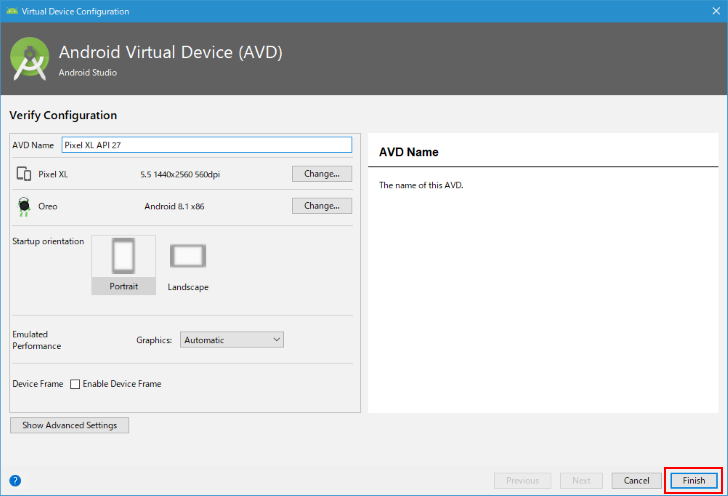

作成したAVDの編集と削除
作成したAVDの内容を編集したり複製したりする方法、そして必要がなくなったAVDを削除する方法について解説します。
AVDを編集する
最初にAndroid Studioを起動してください。(開いているプロジェクトは特に何でも構いません)。
AVD Managerを起動します。「Tools」メニューの中の「AVD Manager」をクリックしてください。
AVD Managerが起動しました。作成済のAVDの一覧が表示されます。
作成済のAVDに対して名前を変更したり、端末を変更したり、Android APIレベルを変更したりするには、対象となるAVDの「Actions」の列にある次のアイコンをクリックしてください。
AVDを新規に作成したときと同じ画面が表示されます。
AVDの名前や端末を変更したりすることができます。今回は端末を変更してみます。現在「Pixel2」と表示されている右側にある「Change...」をクリックしてください。
端末の選択画面が表示されますので、新しく設定したい端末をクリックして選択してください。選択が終わりましたら「OK」をクリックしてください。

端末が変更になりました。
なおAVDの名前は、最初に作成した時の端末とAPIレベルから自動で作成されているので、端末やAPIレベルを変更した場合は必要に応じてAVDの名前を手動で変更していてください。今回は「Pixel 2 API 27」から「Pixel XL API 27」へ変更しました。
AVDに対する編集が終わりましたら「Finish」をクリックしてください。

これで作成済のAVDの編集は完了です。
AVDを複製する
作成済のAVDとほぼ同じAVDを作成したい場合、AVDを初めから作成するかわりに作成済のAVDを複製し、編集を行うと便利です。
AVDを複製するには、AVD Managerの画面で対象となるAVDの「Actions」の列にある次のアイコンをクリックしてください。
表示されたメニューの中から「Dupulicate」をクリックしてください。
AVDが複製され、複製されたAVDの編集画面が表示されます。AVDの名前以外(名前は先頭に「Copy_of_」が追加されています)は複製元のAVDの設定内容が初期値として設定されているので、必要に応じて編集してください。
今回はAPIレベルを変更し、AVDの名前を手動で変更しました。
編集が終わりましたら「Finish」をクリックしてください。
AVDの複製が完了し、AVD Managerの一覧に表示されました。
AVDを削除する
使用しなくなったAVDは削除することができます。AVDを削除するには、AVD Managerの画面で対象となるAVDの「Actions」の列にある次のアイコンをクリックしてください。
表示されたメニューの中から「Delete」をクリックしてください。
確認ダイアログが表示されます。AVDを削除してよろしければ「Yes」をクリックしてください。
AVDの削除が完了しました。
-- --
作成済のAVDの編集や複製、そして使用しなくなったAVDの削除方法について解説しました。
( Written by Tatsuo Ikura )

著者 / TATSUO IKURA
初心者～中級者の方を対象としたプログラミング方法や開発環境の構築の解説を行うサイトの運営を行っています。